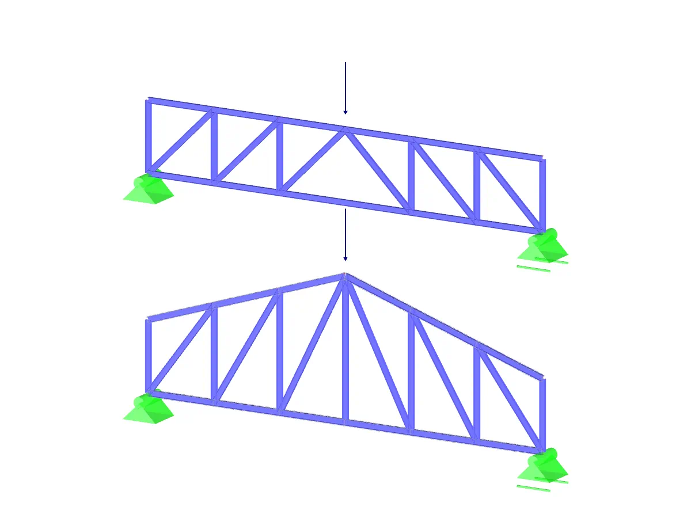

Programming
- #Arduino
- #html
- #css
- #Java
- #Python
Programming is a necessary step nowadays and allows to realize many projects. I have done some myself, whether it is a software with a GUI or Arduino programs.
-
Web sites
For a long time I made websites without putting them online, but during my first year of preparatory class I took the plunge and made the website of AEP, an association in my school. This year I decided to launch two new websites, theCRIS, a robotics club of which I am president, and my portfolio that you are seeing right now.
EnlargeWeb sites
-
Websites are nowadays great showcases, and knowing how to make them is a plus that allows to put forward subjects. And even if no-code systems are more and more common, I decided to write myself the source code of the different websites I made to be able to put what I wanted, but also to be able to change hosting if needed.
For the AEP site, I recovered an alpha of the site, created the majority of the sections present today, and corrected many bugs, the whole hosted at ovh. The creation of the CRIS and my portfolio was however different. Indeed I started from scratch to build everything. I also decided to host them on github.io to facilitate their update. I finally discovered through these projects HTML, CSS and JavaScript. These are essential web programming languages that allow me to present my portfolio as I wish but also to create pages dedicated to my future projects that I am currently working on.
ShrinkWebsites are nowadays great showcases, and knowing how to make them is a plus that allows to put forward subjects. And even if no-code systems are more and more common, I decided to write myself the source code of the different websites I made to be able to put what I wanted, but also to be able to change hosting if needed.
For the AEP site, I recovered an alpha of the site, created the majority of the sections present today, and corrected many bugs, the whole hosted at ovh. The creation of the CRIS and my portfolio was however different. Indeed I started from scratch to build everything. I also decided to host them on github.io to facilitate their update. I finally discovered through these projects HTML, CSS and JavaScript. These are essential web programming languages that allow me to present my portfolio as I wish but also to create pages dedicated to my future projects that I am currently working on.
-
-
Databases

For a project involving a computer science module in the first year of the electrical engineering cycle, we had to create a website capable of handling a system of accounts with different privileges depending on status, student or teacher, and registration for course modules. All on a web interface with history management.
EnlargeDatabases
-
Databases are essential to today's IT infrastructures, so it's important not only to know how they work, but also how to use them. That's why we studied it for a semester at my school. To apply our knowledge, we had to carry out a project using a relational database, more specifically MySQL, all in JAVA. During this project, we were also able to discover PostgreSQL, a visual database management system.
-
I was in charge of the database part of this project. The web interface was created using Vaadin, a Java web framework, by one of my project teammates. Having already created web pages, I wanted to take advantage of this project to deepen my knowledge in a field I didn't know: databases. In this project, I created the appropriate queries for the database, implemented them in Java and added security modules to prevent, among other things, query injection. I also designed the database structure to make it scalable and future-proof. The project is also freely available ongithub.
ShrinkDatabases are essential to today's IT infrastructures, so it's important not only to know how they work, but also how to use them. That's why we studied it for a semester at my school. To apply our knowledge, we had to carry out a project using a relational database, more specifically MySQL, all in JAVA. During this project, we were also able to discover PostgreSQL, a visual database management system.

I was in charge of the database part of this project. The web interface was created using Vaadin, a Java web framework, by one of my project teammates. Having already created web pages, I wanted to take advantage of this project to deepen my knowledge in a field I didn't know: databases. In this project, I created the appropriate queries for the database, implemented them in Java and added security modules to prevent, among other things, query injection. I also designed the database structure to make it scalable and future-proof. The project is also freely available ongithub.
-
-
Lattice simulation
During my first year of preparatory classes, we were asked to create software that would allow us to plot and customise properties, as well as calculating forces on a lattice. All in Java.
EnlargeLattice simulation
-
Understanding the software we use and its limitations is a useful attribute for an engineer, which is why my school asked us to create software with a graphical lattice simulation interface, all in the language we had learnt in class, Java. We were 3 first-year students. So we agreed to divide the work into 3 main parts: The mathematical simulation, the graphical interface and saving the files.
I was responsible for implementing the mathematical formulas and handling any exceptions that might arise. I had to find the most appropriate formulas and create a matrix inverter of size n, as I couldn't use pre-made libraries. I also had to create a system for saving files in .txt format and the structure of objects to make them customisable (materials used, mass, type of connection, etc.), as one of my team-mates finally left school during the semester. My remaining team-mate helped me optimise the calculations and produced a complete command interface and the beginnings of a graphical interface where you could move the points and modify the parameters of each beam independently. The project is available on github.
ShrinkUnderstanding the software we use and its limitations is a useful attribute for an engineer, which is why my school asked us to create software with a graphical lattice simulation interface, all in the language we had learnt in class, Java. We were 3 first-year students. So we agreed to divide the work into 3 main parts: The mathematical simulation, the graphical interface and saving the files.
I was responsible for implementing the mathematical formulas and handling any exceptions that might arise. I had to find the most appropriate formulas and create a matrix inverter of size n, as I couldn't use pre-made libraries. I also had to create a system for saving files in .txt format and the structure of objects to make them customisable (materials used, mass, type of connection, etc.), as one of my team-mates finally left school during the semester. My remaining team-mate helped me optimise the calculations and produced a complete command interface and the beginnings of a graphical interface where you could move the points and modify the parameters of each beam independently. The project is available on github.
-